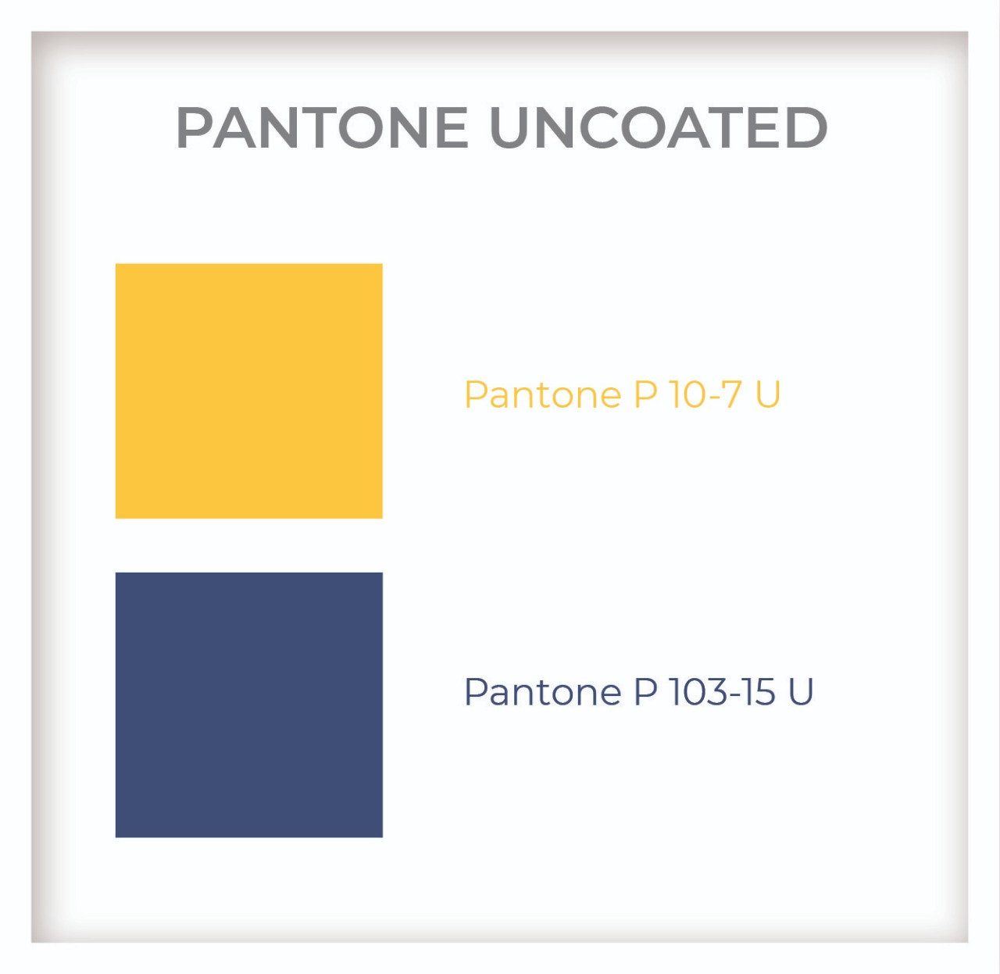

Central do Time de 1º Impacto
Manual vivo para recepção, acolhimento e suporte diário: encontre procedimentos, gere respostas, faça triagem e acompanhe rotinas sem caçar informação em páginas soltas.
Manual de marca NaCapital
Paleta e linguagem visual aplicadas como padrão do portal.

páginas convertidas em tópicos práticos
checklists para rotina e exceções
ferramentas e plataformas mapeadas
credenciais expostas no portal
Princípio de atendimento
O Time de 1º Impacto é a porta de entrada da experiência NaCapital: acolhedor, resolutivo, gentil e seguro, com comunicação clara e acompanhamento do início ao fim.
Como usar
Comece pela busca, use o assistente para dúvidas, abra checklists durante o turno e gere respostas quando precisar manter o padrão de linguagem no WhatsApp.
Pergunte ao Manual
Assistente local com busca por conhecimento estruturado. Ele sugere respostas, procedimentos relacionados e próximos passos.
Resposta
Triagem de Atendimento
Classifique uma demanda rapidamente e veja o caminho recomendado.
Recomendação
Gerador de Resposta WhatsApp
Crie mensagens completas, humanas e alinhadas ao tom do NaCapital.
Mensagem pronta
Checklists do Turno
Estados salvos neste navegador. Use para manter a rotina visível sem alterar documentos oficiais.
Playbooks
Procedimentos do manual convertidos em blocos acionáveis.
Ferramentas e Plataformas
Guia rápido para saber para que serve cada sistema, quando usar e quais cuidados tomar.
Dicionário NaCapital
Vocabulário cultural para manter consistência no atendimento e no onboarding.
Fonte e Segurança
Este site foi organizado a partir do manual anexado e da identidade visual institucional NaCapital.
Documento base
Manual do Time de 1º Impacto, PDF A4 com 38 páginas. O conteúdo foi reestruturado para uso operacional, com busca, checklists e respostas de apoio.
Dados sensíveis
Credenciais, senhas e acessos internos foram intencionalmente mascarados. Em casos de dúvida, consulte COp/CM ou o arquivo oficial de senhas autorizado.
Marca aplicada
O portal agora usa como base visual a marca NaCapital, com amarelo `Pantone P 10-7 U`, azul `Pantone P 103-15 U` e tipografia de referência `SugarcubesRegular` com fallback compatível.
Resultados da Busca
Itens encontrados no manual.